Södermalm i tid och rum
Namnet skrivs ömsom "Ekenhjelm, Ekehjelm, Ekehielm"
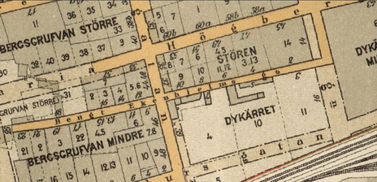
{kind=link}
Bengt Ekenhjelmsgatan österut 1890 från nr 18 t v och nr 19 t h
Bengt Ekenhjelmsgatan 9-15, 12-16 västerut från Timmermansgatan 1896
|
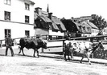 Bengt Ekenhjelmsgatan 10-6 österut. Lajdare på väg med kor söderut på Timmermansgatan
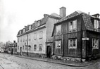 |
Kommentar till bilden med korna till vänster:
Lajdare, från nederländskans leiden; ungefär "leda fösa", tidigare benämnd hopare, var en yrkesgrupp som tog emot djur vid hamnar och stationer i Stockholm under 1800-talets andra hälft och in på 1900-talet. Transporterades djuren med båt till staden kom de oftast till Munkbron medan grisar främst fraktades med järnväg och lossades vid Södra station. Djuren leddes av lajdarna till de små slakterier som fanns inne i staden efter att skråväsendet upphört och slaktningen släppts fri. De flesta av dessa låg vid Skanstull. Det hände att lajdarna tappade kontrollen över kreaturen och att människor blev nertrampade, dessutom hade de många småslakterierna dålig renlighet. År 1882 beslutades att ett slakthus skulle byggas för all stadens slakt. Slakthusområdet placerades i Enskede men blev inte färdigt förrän 1912 och först då upphörde yrket. Bengt Ekenhjelmsgatan är uppkallad efter underståthållare Bengt Ekenhjelm och även ett sentida torg har fått sitt namn efter honom, Ekehjelmstorget. Namnet Ekehjelmstorget tillkom 1981 och ligger strax nordost om Södra station. Bengt Baaz Ekehjelm föddes den 12 december 1612 som son till biskop Joannes Baazius d.ä. och dennes första hustru, Sigrid Persdotter, vars far Petrus Jonæ Angermannus likaledes beklätt biskopssätet i Växjö. |
{kind=link}
{kind=link}
{kind=link}
|
Namnet Bengt Ekehjelmsgatan omtalas redan år 1642. Bengt Ekehielm omtalas då som tomtägare vid gatan ("Secreterererens M. Bengdt Baas tompt"). Fem år senare kallas samma egendom för "Secretererens wälbördig Bengdt Ekenhielms tompt". Först efter Ekehielms död (1650) har hans namn fästs vid gatan. Sålunda omtalas "Sal. Bengt Ekiehielms gatu" 1664. År 1670 möter namnformerna "Ekehielms gatun" och "Ekehiälms twärgattan".
Hans far, Joannes Baazius d.ä., var född 1581 på Ekesås gård i Gårdsby församling i Norrvidinge härad i Småland. Hans bror Johannes Baazius d.y. skulle sedermera bli ärkebiskop. Bengt Baaz blev 1627 student vid universitetet i Rostock, vid Uppsala universitet 1628 och vid universitetet i Dorpat 1631. Sedan han 1633 tagit magistergraden i Dorpat, anställdes han som lärare åt arvfursten Karl Gustav (X). Samtidigt blev han auskultant i Svea hovrätt 1635. Han följde arvfursten under dennes studier vid Uppsala universitet 1638 och därefter under dennes resor i Sverige och 1638-1640 under hans utländska resa genom Danmark, Tyskland, Holland, Frankrike, Schweiz och England. 1642 lämnade han hovet för en tjänst som sekreterare vid Svea hovrätt. Han kvarstod dock i nära förhållande till Pfalzätten och fungerade som rapportör till Johan Kasimir av Pfalz-Zweibrücken om förehavanden och politiska händelser i Stockholm. Han adlades 1647 med namnet Ekehjelm. Ursprunget till namnet Ekehielm är således från faderns födelsegård, Ekesås gård. Året därpå blev Bengt Ekehielm underståthållare i Stockholm, i vilken befattning han två år senare avled 5 september 1650 i Stockholm. |
|
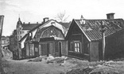 Bengt Ekenhjelmsgatan 19-9 österut. Korsar Timmermansgatan och längst bort i fjärran Rosenlundsgatan |
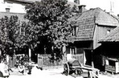 Bengt Ekenhjelmsgatan 12, gårdssidan. Maria gamla prästgård. |
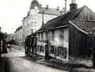 Bengt Ekenhjelmsgatan 15_9. I bakgrunden Timmermansgatan 39 |
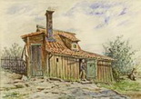 Bengt Ekenhjelmsgatan 16. Akvarel av Fritz Ahlgrensson 1902, kallad "Den gamle sjömannens stuga" |
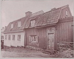 Bengt Ekenhjelmsgatan 17_15 |
{kind=link}
{kind=link}
{kind=link}
{kind=link}
{kind=link}
|
Idag, 2020, finns bara den östra delen av Bengt Ekehjelmsgatan kvar - mellan Swedenborgsgatan och Timmermansgatan. Den västra delen har uppgått i Bergsgruvan. som är dels ett bergigt område norr om Södra station dels namnet på den park som ligger där. Parken gränser med sin västra del till Rosenlundsgatan.
Redan 1650 anges den nyanlagda Timmermansgatan delvis vara belägen "ytterst i Berggrufwan på Södermalm". Bergsgruvan Större är även namnet på ett kvarter som återfinns norr om parken. Bergsgruvan Mindre däremot finns inte längre. Troligen har någon form av bergsbrytning och gruvdrift ägt rum i trakten. |
|
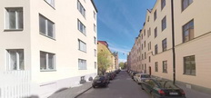 Dagens Bengt Ekehjelmsgatan österut med Ekehjelmstorget och Swedenborgsgatan i fjärran. |
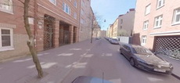 Västerut och längst bort Timmermansgatan |
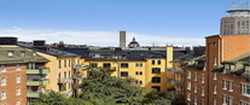 Ekehjelmstorget |
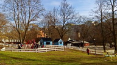 Bergsgruvan |
{kind=link}
{kind=link}
{kind=link}
{kind=link}